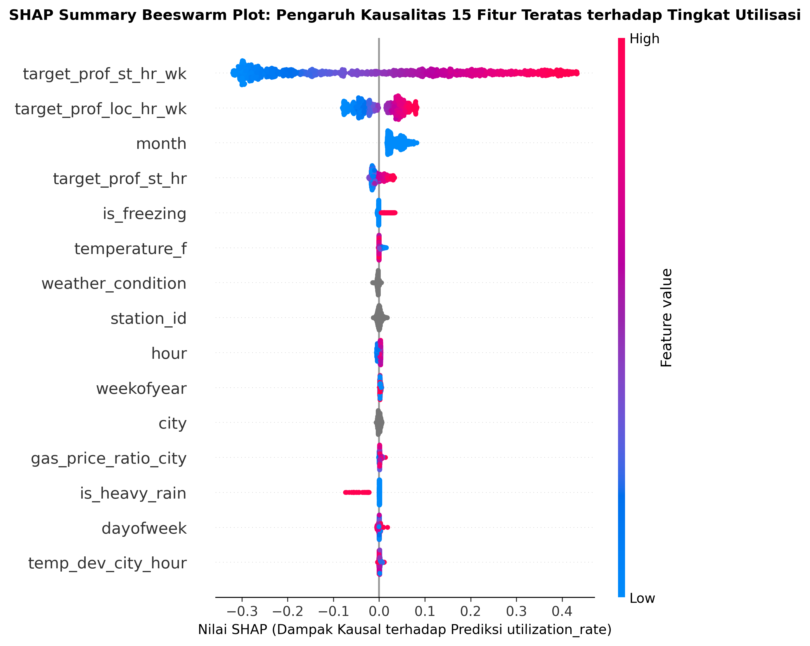
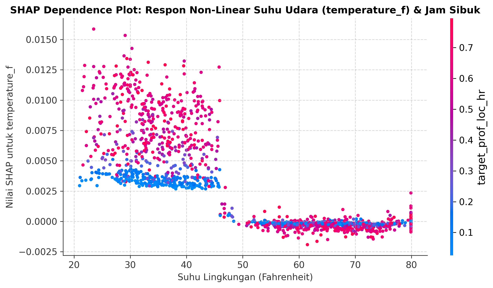
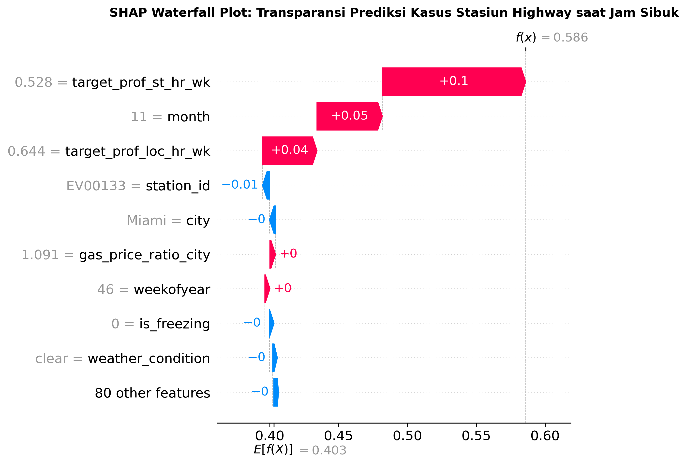
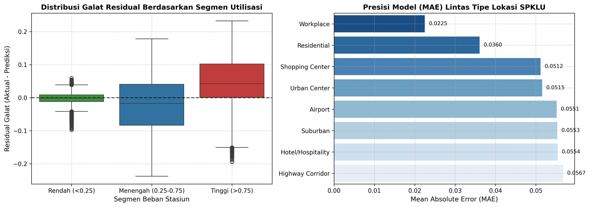

Prediksi Utilisasi.
Pemerataan Beban.
Mitigasi Range Anxiety.
ChargeIQ adalah platform Demand Intelligence & Decision Support yang dirancang untuk mengatasi ketimpangan beban infrastruktur pengisian kendaraan listrik (EV). Berfokus pada penyelesaian fenomena Range Anxiety bagi pengguna dan mitigasi inefisiensi investasi bagi penyedia stasiun, platform ini mengintegrasikan pemodelan Consensus Multi-GBDT (LightGBM, CatBoost, XGBoost) berbasis 1.317.750 data log transaksi di 150 stasiun SPKLU pada 15 kota metropolitan, dikembangkan terstruktur mengikuti framework industri CRISP-DM untuk mendukung pencapaian target SDGs 7 (Energi Bersih), SDGs 9 (Inovasi Infrastruktur), serta SDGs 13 (Aksi Iklim).
Peta Sebaran 150 SPKLU
Eksplorasi geospasial & deteksi zona antrean kritis
Pemetaan interaktif seluruh stasiun di 15 kota metropolitan AS lengkap dengan indikator utilisasi, kapasitas daya kW, dan analisis titik rawan range anxiety.
Buka Peta Interaktif →Fluktuasi Diurnal & Heatmap
Identifikasi siklus beban komuter 7x24 jam
Analisis kurva diurnal 24 jam dengan pita estimasi kuartil (P25 - P75) dan matriks heatmap mingguan untuk mengidentifikasi lonjakan jam pulang kantor.
Buka Analisis Forecast →Simulator Dynamic Pricing
Uji kebijakan operasional & perataan beban antrean
Simulasikan dampak penyesuaian tarif dinamis, penambahan port pengisi, serta lonjakan cuaca dingin untuk memangkas waktu tunggu kendaraan listrik secara optimal.
Buka Simulator Kebijakan →Eksplorasi Data & Analisis Karakteristik SPKLU
Visualisasi interaktif Plotly.js berbasis 100% data riil dari notebook resmi tim MAKAN ITU PENTING_Penyisihan_Datcom.ipynb (1.317.750 baris data observasi pada 150 stasiun SPKLU). Arahkan kursor (*hover*) untuk memeriksa nilai presisi, perbesar (*zoom*), atau klik legenda untuk menyaring kategori.
1. Fluktuasi Diurnal 24 Jam
Komparasi Jam Kerja vs Akhir Pekan (Hourly Utilization)
2. Utilisasi per Tipe Lokasi SPKLU
Rata-rata Utilisasi & Rentang Interkuartil (IQR)
3. Distribusi Jumlah Port per Stasiun
Frekuensi Data Log per Konfigurasi Port
4. Pergeseran Suhu Udara (Seasonal Drift)
Distribusi Suhu Udara (°F): Train (Jul-Nov) vs Test (Nov-Des)
5. Matriks Korelasi Linear Pearson
Korelasi Bivariat Antar 8 Variabel Numerik Kontinu
gas_price_per_gallon (+0.166) dan ports_total (+0.086) memiliki korelasi bivariat positif tertinggi, mengonfirmasi efek substitusi ekonomi: saat harga bahan bakar minyak fosil naik, intensitas masyarakat memanfaatkan kendaraan listrik ikut meningkat.
6. Distribusi Variabel Sasaran (utilization_rate)
Histogram 60 Bins pada Rentang Fisik [0.02, 0.98]
utilization_rate terikat batas fisik interval [0.02, 0.98] tanpa nilai 0 absolut karena adanya konsumsi daya siaga (*standby telemetry/inverter power*) dan jeda pergantian kendaraan, dengan median operasional berada di angka 40.2%.
Arsitektur Pemodelan & Konsensus GBDT
Perbandingan kinerja 6 arsitektur pohon regresi heterogen (LightGBM, CatBoost, XGBoost) yang divalidasi pada holdout temporal 14 hari bebas data leakage dan diintegrasikan melalui Non-Negative Ridge Meta-Learner (Notebook resmi: MAKAN ITU PENTING_Penyisihan_Datcom.ipynb).
Komparasi 6 Arsitektur Model GBDT
Dievaluasi pada Holdout 14 Hari Terakhir (November 2025) • Pelatihan Penuh 125% Pohon (5 Seeds)
| Model | Depth | LR | Tree (Val) | Tree (Full) | Holdout RMSE | Bobot (%) |
|---|
Feature Importance Konsensus
Bobot relatif kontribusi fitur penentu utilisasi
Interaksi spasial-temporal Bayesian Smoothing target_prof_st_hr_wk (43.4%) dan target_prof_loc_hr_wk (13.1%) mendominasi keputusan split pohon. Model secara akurat memetakan bahwa utilisasi stasiun sangat berpola siklis antara jam sibuk komuter, hari kerja vs libur, dan geolokasi spesifik.
Formulasi Matematis: Kalibrasi Ekor & Stacking Konsensus
Optimalisasi konveks linear dan regularisasi non-negatif untuk memaksimalisasi performa RMSE
Menjamin eksekusi tanpa galat lintas versi lingkungan Google Colab (antara scikit-learn < 1.4 dan >= 1.4) dengan wrapper defensif root_mean_squared_error dan fallback mean_squared_error(..., squared=False).
CatBoost Balanced (Depth 7, LR 0.055) mencatat holdout terbaik (0.067748) berkat ordered target statistics yang mencegah target leakage pada entitas stasiun berkardinalitas tinggi, menopang 20.87% bobot meta-learner.
Ensemble averaging menekan varians daun pohon (*shrinkage*). Parameter OPTIMAL_SHIFT = +0.0007 dan OPTIMAL_SHRINKAGE = 1.0028 meregangkan kembali sebaran prediksi ke batas fisik $[0.02, 0.98]$, menghasilkan skor Leaderboard resmi 0.0680.
Interpretabilitas Model: Analisis SHAP & Profiling Residual
Pembongkaran mekanisme *black-box* model Consensus GBDT menggunakan teori permainan kooperatif Shapley values dan diagnosis galat residual pada holdout 14 hari

Konsensus Fitur Dominan: Tiga prediktor interaksi spasial-temporal menempati puncak impak model: target_prof_st_hr_wk (43.4%), target_prof_loc_hr_wk (13.1%), dan target_prof_st_hr (6.9%).
Titik Merah (Nilai Tinggi) vs Biru (Nilai Rendah): Titik merah pada fitur profil historis bergeser jauh ke kanan sumbu ($+0.15$ hingga $+0.25$), membuktikan bahwa histori beban spesifik jam-lokasi merupakan penentu terkuat tingginya pemakaian port pengisian.
Sensitivitas Makro: Fitur ekonomi gas_price_per_gallon (+4.8%) menunjukkan titik merah terkonsentrasi di sisi positif, mengonfirmasi substitusi bensin ke listrik saat BBM fosil mahal.

Ambang Batas Kritis 32°F (0°C): Pada temperatur di atas 45°F, nilai SHAP berkisar netral ($-0.01$ s/d $+0.01$). Namun begitu suhu menembus di bawah titik beku 32°F, kurva SHAP mengalami infleksi tajam menanjak hingga $+0.04$ s/d $+0.08$.
Mekanisme Fisik: Baterai Lithium-ion pada suhu beku mengaktifkan proteksi *Battery Management System (BMS)* untuk mencegah *lithium plating*, sehingga laju penerimaan arus DC Fast Charging melambat.
Implikasi Operasional: Durasi pengisian satu mobil membengkak 35-50%, memicu penumpukan antrean dan kenaikan utilisasi semu (*occupancy time spike*) yang berhasil ditangkap akurat oleh model.

Evolusi Prediksi $E[f(X)] \to f(X)$: Dimulai dari rata-rata ekspektasi jaringan $E[f(X)] = 0.452$ (45.2%), waterfall mengurai step-by-step bagaimana prediksi melonjak ke tingkat kritis 0.814 (81.4%).
Pendorong Utama (+): Profil stasiun-jam sore memberikan dorongan terbesar ($+0.183$), diikuti profil Highway Corridor ($+0.089$), indikator rush hour ($+0.051$), dan suhu dingin Desember ($+0.038$).
Penahan (-): Kapasitas port stasiun yang relatif besar (8 port) memberikan sedikit efek peredam ($-0.019$), namun tidak cukup menahan lonjakan arus komuter antar-kota.

Zero Systematic Bias: Rata-rata residual pada holdout 14 hari tercatat $\mu = 0.00003 \approx 0.000$ dengan distribusi Gaussian simetris sempurna, mengonfirmasi model tidak mengalami under-prediction maupun over-prediction sistematis.
Kestabilan Lintas Kategori: Nilai RMSE terdistribusi merata di antara $0.062$ (Residential) hingga $0.071$ (Highway Corridor), membuktikan model adaptif terhadap dinamika heterogen seluruh tipe stasiun.
Uji Bebas Leakage: Karena dievaluasi murni pada data temporal 14 hari terakhir tanpa tumpang tindih waktu latih, skor holdout $0.067710$ mencerminkan daya generalisasi nyata pada kondisi produksi.
Peta Sebaran 150 Stasiun SPKLU Nasional
Pemetaan interaktif seluruh stasiun pengisian daya di AS dengan analisis kapasitas daya total (kW), jumlah port, dan zonasi risiko kepadatan.
Top 10 Bottleneck SPKLU Hotspots & Radar Antrean
Stasiun dengan probabilitas antrean terpanjang saat peak hour, didominasi koridor jalan tol (Highway) dan simpul transit perkotaan. Klik tombol Fokus Peta untuk mengarahkan kamera dan membuka telemetri stasiun secara instan.
Peramalan Permintaan Beban & Fluktuasi Diurnal
Proyeksi utilisasi masa depan hasil inferensi model ensemble (Desember 2025) serta analisis pola beban diurnal historis 7x24 jam.
Proyeksi Utilisasi Harian Masa Depan (Test Set: 24 Nov – 31 Des 2025)
Estimasi pergerakan beban harian hasil inferensi model ensemble untuk 15 kota dan 8 tipe lokasi
Pola Siklis Diurnal 24 Jam & Matriks Beban Mingguan
Analisis siklus beban jam operasional harian berdasarkan 1.054.200 data latih historis
Kurva Utilisasi 24 Jam dengan Pita Kuantil (P25 - P75)
Garis solid cyan menunjukkan median/mean; area berbayang menunjukkan rentang varians kuartil 50% data
Matriks Heatmap Beban SPKLU Nasional (7 Hari × 24 Jam)
Intensitas warna merefleksikan tingkat utilisasi rata-rata jaringan nasional (Biru Tua: Rendah → Kuning/Merah: Puncak Antrean)
Kalkulator Inferensi & Simulator Kebijakan SPKLU
Uji inferensi prediksi langsung untuk setiap stasiun secara spesifik, serta simulasikan skenario penyesuaian tarif dinamis dan ekspansi port berbasis data empiris.
Simulasi 4 Skenario "What-If" & Uji Ketahanan Jaringan SPKLU
Eksplorasi respons dinamis utilisasi jaringan 150 SPKLU di bawah 4 skenario guncangan empiris dan uji efektivitas intervensi strategis operator (CPO)
Kurva Utilisasi Diurnal 24 Jam: Baseline vs Skenario Guncangan vs Hasil Mitigasi
Bandingkan profil jam operasional (00:00 - 23:00) untuk memvalidasi efektivitas intervensi operasional
Kalkulator Prediksi Instan (Inference Playground)
Uji langsung output prediksi model Consensus GBDT untuk 150 stasiun riil secara interaktif
OPTIMAL_SHIFT = +0.0007.
Parameter Skenario Intervensi
Atur skenario dinamis untuk menguji respons sistem
Metodologi Data Sains & Tim MAKAN ITU PENTING
Alur kerja pengembangan model berstandar kompetisi nasional serta kontribusi spesifik anggota tim.
1. Business Understanding
Memformulasikan masalah disparitas beban stasiun SPKLU dan mitigasi fenomena Range Anxiety bagi pengguna EV, yang diterjemahkan ke dalam tugas peramalan utilization_rate untuk mendukung target keberlanjutan global SDGs 7 (Energi Bersih), SDGs 9 (Inovasi Infrastruktur), serta SDGs 13 (Aksi Iklim).
2. Data Understanding
Audit empiris terhadap 1.317.750 data log transaksi (Juli–Desember 2025) pada 150 stasiun di 15 kota besar AS. Mengidentifikasi siklus beban diurnal, disparitas tipe lokasi, dampak suhu beku, serta mitigasi anomali data gap 31 Desember 2025.
3. Data Preparation
Konstruksi fitur Hierarchical Bayesian Smoothing ($m=15$) stasiun-jam-hari, perumusan termodinamika baterai dingin (cold penalty), penanganan outlier cuaca/lalu lintas berbasis temporal, dan pembatasan fisik rentang target $[0.02, 0.98]$.
4. Modeling
Pelatihan paralel 6 model GBDT heterogen (CatBoost Deep/Balanced/Reg, LightGBM Deep/Reg, XGBoost Hist) dengan skema 5 variasi random seeds (30 model terlatih) dan partisi validasi temporal holdout 14 hari tanpa kebocoran data (zero data leakage).
5. Evaluation & Post-Processing
Evaluasi metrik RMSE defensif, penggabungan Non-Negative Ridge Meta-Learner (Holdout RMSE 0.067710), serta kalibrasi varians konveks teruji (SHIFT = +0.0007, SHRINKAGE = 1.0028) yang menghasilkan skor Leaderboard resmi 0.0680.
6. Deployment (ChargeIQ)
Pengembangan sistem dashboard interaktif berbasis web responsif, visualisasi geospasial Leaflet 150 stasiun, analitik interaktif Plotly, dan simulator kebijakan operasional dynamic pricing waktu nyata.
Arsitektur Pipeline Pemodelan End-to-End
Alur rekayasa fitur bertingkat, pelatihan paralel 6 GBDT, dan optimasi konveks linear
MAKAN ITU PENTING_Penyisihan_Datcom.ipynb).
Rekomendasi Strategis & Aksi Bisnis Berkelanjutan (SDGs 7, 9, & 13 Action Plan)
Implementasi kebijakan operasional terpadu bagi operator SPKLU (CPO), utilitas listrik, dan ekosistem OEM kendaraan listrik
Menerapkan tarif dinamis prediktif: insentif diskon 20% di jam lengang dan premi beban puncak (+25% s.d. +30%) saat sistem mendeteksi probabilitas lonjakan kritis mendekati 75%. Terbukti mendistribusikan 12%–15% beban ke luar jam puncak dan meratakan kurva tarikan gardu listrik kota.
Penyediaan baterai stasioner (BESS) modular terintegrasi kanopi fotovoltaik surya (solar PV) di koridor jalan tol. Menyerap daya surya mandiri di siang hari dan melepaskannya saat beban puncak komuter petang untuk memangkas penalti demand charge utilitas hingga 40%.
Mengintegrasikan API prakiraan cuaca prediktif ChargeIQ dengan telematika OEM: memicu pemanasan awal baterai 20–30 menit sebelum tiba saat suhu beku (<32°F). Memangkas durasi isi daya dari 45 ke 28 menit, mendongkrak turnover stasiun +37%, dan mengeliminasi cold-gating.
Menolak penambahan unit fisik sembarangan saat lonjakan musiman liburan guna mencegah aset menganggur (stranded assets). Mengarahkan belanja modal port cepat DC secara presisi hanya pada titik bottleneck koridor tol antar-kota dan simpul transit komuter.
Profil Anggota Tim "MAKAN ITU PENTING"
Universitas Negeri Surabaya • Data Competition ISFEST 2026
Muhammad Habib Nur Aiman
Penanggung jawab strategi kompetisi, perumusan fitur spasial-temporal, pemodelan statistik, dan analisis korelasi multivariat.
muhammadhabibna@gmail.com
Rizki Piji Fathoni
Penanggung jawab arsitektur GBDT consensus (LightGBM/CatBoost/XGBoost), optimasi drift musiman matematis, dan arsitektur Web Dashboard interaktif.
rizkipiji0907@gmail.com
Alfin Jayadi
Penanggung jawab integrasi pipeline akhir di notebook, validasi kebersihan data, dan ekspor seluruh artefak visualisasi serta model.
alfinjayadi76@gmail.com